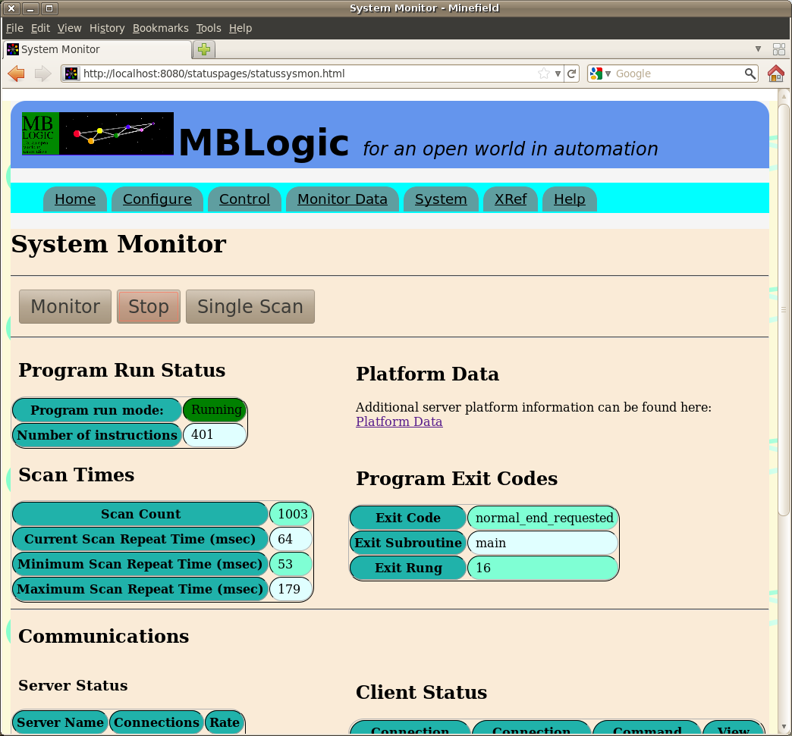
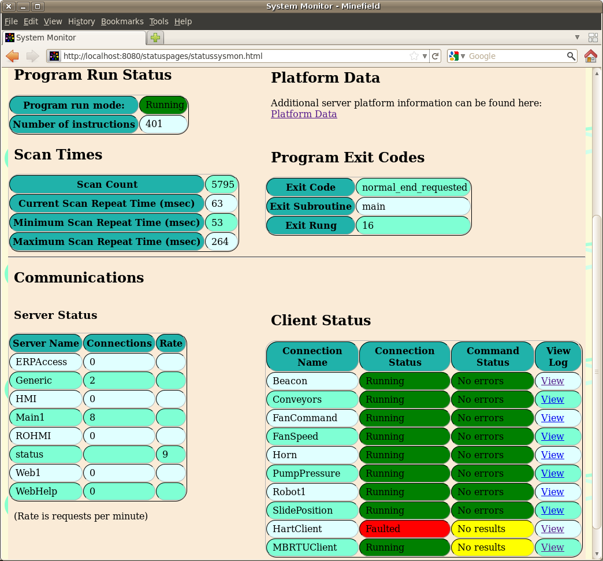
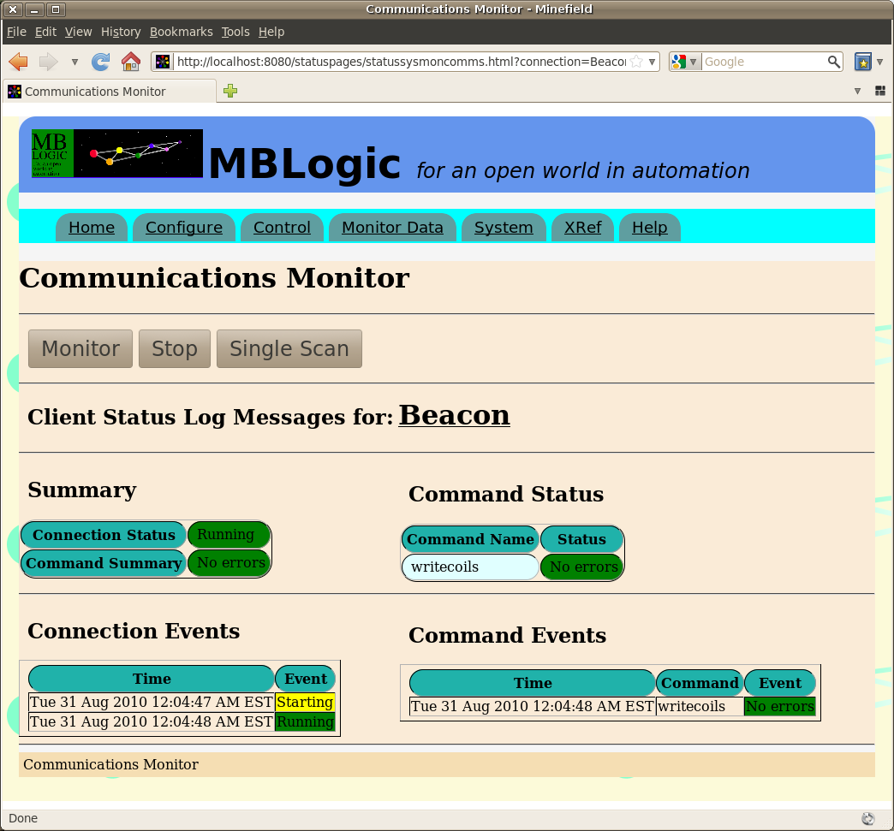

MBLogic
for an open world in automation
MBLogic
for an open world in automation
Help - System Monitor
Overview
The "System Monitor" page allows monitoring of both the soft logic run status and the status of the communications system. If "Single Scan" is selected, the page will conduct one scan and then update itself. If if "Monitor" is selected, the page will poll the server repeatedly and update itself continuously. "Stop" will stop the continuous scan mode.
The "System Monitor" page also includes a link to the "Platform Data" page. See the platform data page documentation for more information on that topic.
Program Run Status
The "Program Run Status" displays information about the running soft logic system. This includes the following:
- Program run mode.
- Number of instructions in the program.
- The scan count and scan timers from the soft logic system. The maximum scan will be affected by events such as reloading the soft logic system (which happens between scans).
- The program exit code. This is a code returned from the soft logic system which indicates why the latest program scan ended.
- Exit subroutine. This is the subroutine which the soft logic program was executing when it exited the scan.
- Exit rung. This is the rung (network) which was executing when the soft logic program exited the scan

Communications
The "Communications" status shows the current status of the active servers and clients.
Server Status
The "Server Status" table shows all the active servers. The "Connections" and "Rate" columns provide an indication of connection activity. Different protocols will provide different information in these columns depending on the nature of the the protocol.
- modbustcp - Maintains a count of open connections.
- generic - Maintains a count of clients based on a watchdog time-out for each generic client to determine if the client is actively scanning the generic server.
- hmi - Measures connection rate
- status - Measures connection rate
- mbrest - Measures connection rate.
- help - Does not provide any information.
Connection rate is measured as a moving average of requests over a 5 minute period.
Client Status
The "Client Status" table shows the current status of the TCP and generic clients. The table includes the connection status, the command status, and a link to a page showing more details. Connection and command status are explained in the section on communications details.

Communications Monitor
The communications monitor shows the status details for an individual communications client. It can also monitor in continuous or single scan mode.
Connection Status Summary
This shows a summary of the state of the client. The connection status is the state of the overall connection. This may have the following states:
- Starting
- Running
- Stopped
- Faulted
Command Status Summary
This is a summary of the command status. If there are multiple communications commands, this will show a combined view of them. If all commands are "Ok", the summary will also show "Ok". If one of the commands is not Ok, the summary will show that status. If more than one command is not Ok, the summary will show the status of one of them.
Command Status
This shows the status of each of the individual commands. Each communications command is shown separately. The command status messages include:
- No errors - No errors were detected.
- Device error - An unspecified error appears to have occurred in the field device.
- Client connection lost - The connection to the client was lost.
- Message time out - Communications timed out.
- Undefined server error - An unspecified error occurred in the communications system.
- No result - There is no valid data to report (the command may not have executed yet).
- Other, protocol specific errors.
Connection and Command Events
The connection and command event logs show the connection and command status in a running log format together with a time stamp. Only changes of state are recorded.
Client Messages
The client messages table shows a running log of messages sent by the client. If there are no client messages, this table will be hidden from view.
